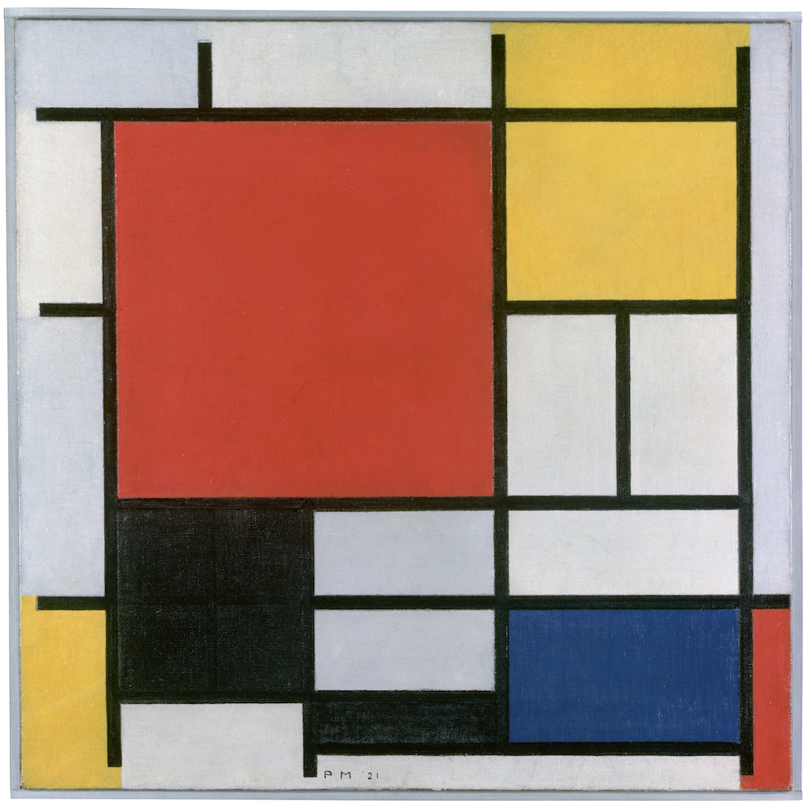

Composition with Large Red Plane, Yellow, Black, Gray and Blue

Piet Mondrian, originally named Pieter Cornelis Mondriaan was a dutch painter that was born March 7 1872. He is known for being one of the pioneers of “Modern Art”. He also was one of the core people to spark minimalism in the 21 century. He didnt start with his abstract painting, instead he started with oil landscape paintings. He Lived in the Netherlands for most of his life, and moved to Paris when he was 39. While there he dropped one of the a’s from Mondriaan to signify his leaving of the Netherlands. In his final years he moved to New York. Piet Mondrian died of pneumonia on 1 February 1944 and was interred at the Cypress Hills Cemetery in Brooklyn, New York.